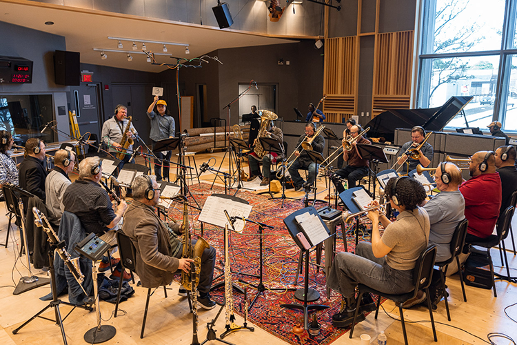
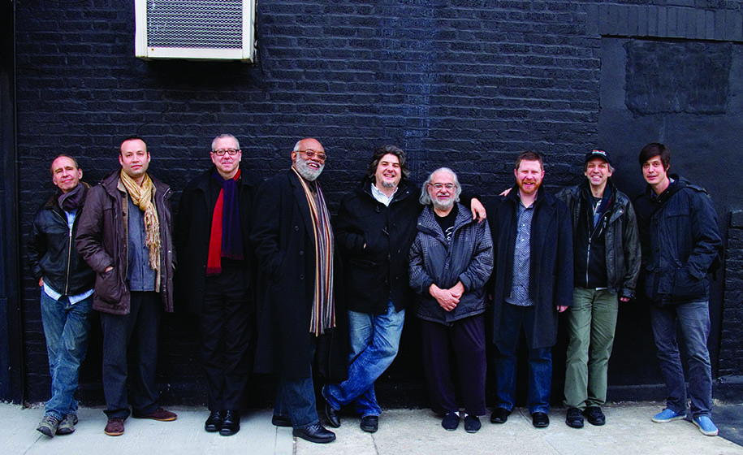
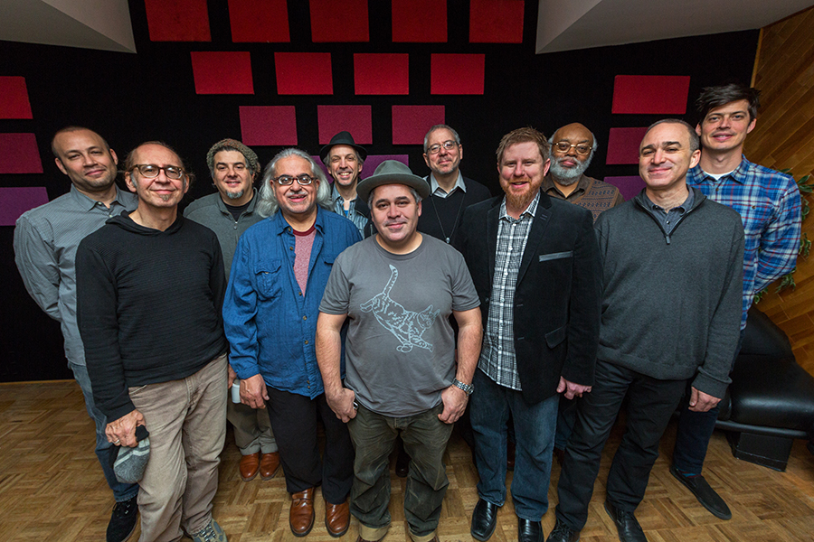

Jason Robinson's Janus Ensemble, Inc. is the non-profit organization that supports much of the creative work of composer, saxophonist, flutist, and scholar Jason Robinson. Robinson's critically acclaimed Janus Ensemble was founded in 2009 and has performed and recorded in a variety of instrumentations and sizes. Expansive in energy and scope, the Janus Ensemble has transformed over the years and now includes a number of small and medium-sized configurations, as well as a flagship 17-piece large ensemble, the Janus Orchestra.

Jason Robinson's Janus Ensemble, Inc. is the non-profit organization that supports much of the creative work of composer, saxophonist, flutist, and scholar Jason Robinson[cite: 94, 96]. Robinson's critically acclaimed Janus Ensemble was founded in 2008 and has performed and recorded in a variety of instrumentations and sizes[cite: 39, 44]. Expansive in energy and scope, the Janus Ensemble has transformed over the years and now includes a number of small and medium-sized configurations, as well as a flagship 17-piece large ensemble, the Janus Orchestra[cite: 18, 43].
We fulfill our mission through:
- Artistic Production & Performance: To foster public appreciation for the jazz art form, also known as creative music, through the rehearsal, performance, and recording of original works for large and small jazz ensembles.
- Educational Outreach: To provide educational programming, including workshops and masterclasses aimed at teaching the history and techniques of composition and performance in jazz and creative music.
- Cultural Preservation: To document and preserve the evolution of small, medium, and large ensemble jazz and creative music through professional performances, recordings, and the commissioning of new works.
- Community Engagement: To increase accessibility to live music in both rural and urban communities in Massachusetts and elsewhere through subsidized public performances.
Imaginative Music, Creative Excellence

This is where your text goes. Because of the "img-right" class, this paragraph will wrap around the left side of the image. Jason Robinson's Janus Ensemble continues to push the boundaries of creative music through these specialized performances.

In this section, the image is pinned to the left. The text will flow naturally around the right side. This alternating layout creates a more dynamic visual flow for your readers as they scroll through the page content.